CMC Valiani
FrameReady is integrated with the Valiani V Studio programs Create and Smart Cut.
-
This allows you to create Work Orders in FrameReady, attach a Valiani template and push those Work Orders directly into the Valiani software.
-
The integration also allows you to start a Frame project inside of Valiani V Studio Create with a template, openings, and more. From there, you can push that Frame project directly into FrameReady’s Work Order module.
Valiani Computerized Mat Cutter
Requirements
-
Requires compatible Valiani CMC and VStudio software.
-
The Valiani software is available only for Windows.
-
Requires FrameReady 13 and FileMaker Pro 19.4 or greater.
Before using the Valiani FrameShop integration in FrameReady
Make sure that you have the Valiani ‘VStudio’ application installed on your computer. VStudio application is currently only available on Windows platform, not Mac. When installing the VStudio software, follow the prompts to install the application in the default installation folder.
Tip: You will only need to do this step once.
-
Make sure that you have the Valiani VStudio application installed on your computer.
VStudio application is currently only available on Windows platform, not Mac. When installing the VStudio software, follow the prompts to install the application in the default installation folder. -
Create a folder in the root of your C:\ drive named FMVAL .
Set the permissions (right-click and choose "Properties") on the folder for read and write access so that VStudio can create and access files in this directory.
This is where your VStudio files are created and stored for your Work Orders in FrameReady
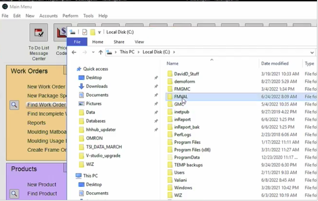
-
Open the VStudio application by navigating to the Valiani folder on your hard drive and opening the VStudio file.
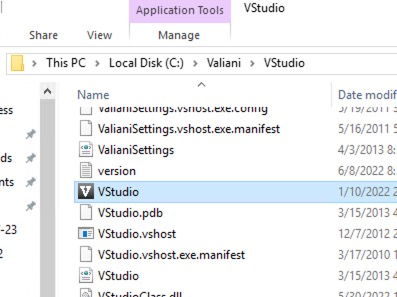
-
On main menu window of VStudio, click the Settings icon (lower left).
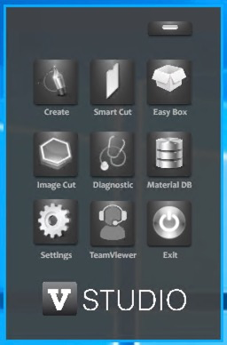
-
The Settings window opens and prompts for a username and password. Please use the username and password provided below:
Username: admin
Password: vds12
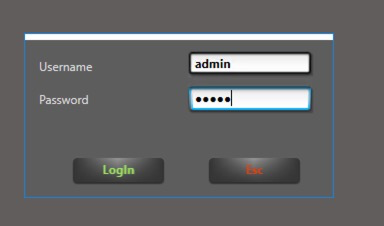
-
The VStudio settings open to show the "General Settings".
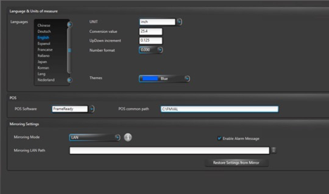
-
There are a few fields here that you need to set.
In the "POS" section (middle), click the POS Software dropdown and choose FrameReady.
In the POS common path field, enter the path to the VMVAL folder that we created during set up, like this C:\FMVAL
This ensures that the software stores the integration files in the correct folder and can access them properly. -
In the top section, confirm that the UNIT of measurement is set to Inch if you are using inches in FrameReady.
You can also set your language of choice here, as well as the color theme of the VStudio program. -
When you are finished entering all of the details for the settings, click the Save button (bottom of the screen) to lock in your changes .
How to Set up pricing for your Valiani templates
You can set your own prices on each one of the Valiani templates in the Price Codes file. This allows you to charge a different amount for each Valiani template that you add on a Work Order based on what template it is. Some templates being more complex than others, you may want to charge a different amount for them.
-
In FrameReady, from the Main Menu, open the Options tab in the Work Order section.
-
Click the More Options button.
-
Open the Work Order Defaults tab, and in the "Computerized Mat Cutter" section, select Valiani.
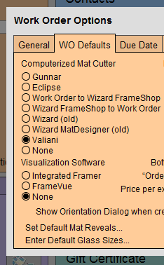
-
Click Done.
-
Now that you have the Valiani CMC preference selected, you can go into a Work Order and click the VAL PRICE button (left hand side of the screen in Work Orders).
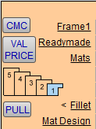
-
This button opens the Price Codes file. If it is the first time that you are using the Valiani integration with the software, you are prompted: "You currently do not have your price codes set up for the Valiani templates. Would you like to run the Valiani set up script to import the price codes for the templates?"
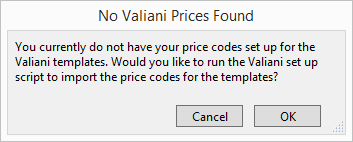
Click OK and FrameReady creates the templates that are available to you in the VStudio Create program. After the templates have been created, they are displayed as a found set, in list view, in the Price Codes file.
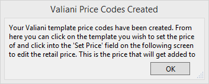
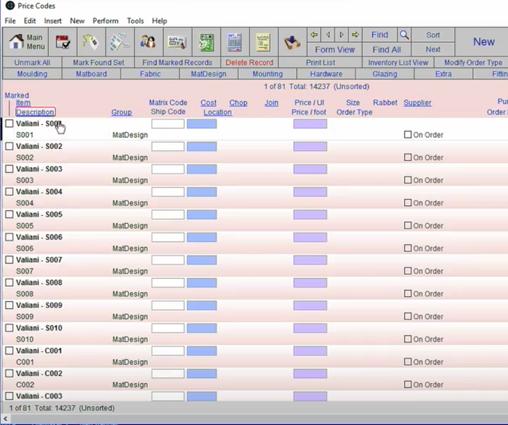
Click the template you wish to edit and then click into the Set Price field to edit the price. Once you click out of the field, the price change is saved and is reflected when adding Wizard templates to Work Orders in the Work Order grand total price.
Two Ways to use the Valiani VStudio Integration
-
Push data from FrameReady to Valiani VStudio
-
Push data from Valiani VStudio to FrameReady
1. Push data from FrameReady into Valiani VStudio
You can now go into the Work Order section of FrameReady and get started creating a Work Order to push into VStudio.
-
In FrameReady, create a new Work Order. Enter your information as far as opening width and height, borders, and mat size.
-
Click the CMC button (left of the Work Order screen) to initialize the process of pushing your Work Order information to VStudio.
-
A new window pops-up over the Work Order screen with two choices: push to VStudio Create or push to VStudio SmartCut.
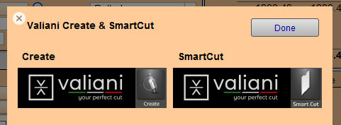
-
We will first show how to push to VStudio Create and then review pushing to the SmartCut program. Both follow the same process.
Once you click the program you want to push to, it will open up a new window with all of the Valiani templates that you can select. Choose the template to use for the opening by clicking on it. Once selected, the window closes and the template is added to the Work Order under Mat Design.
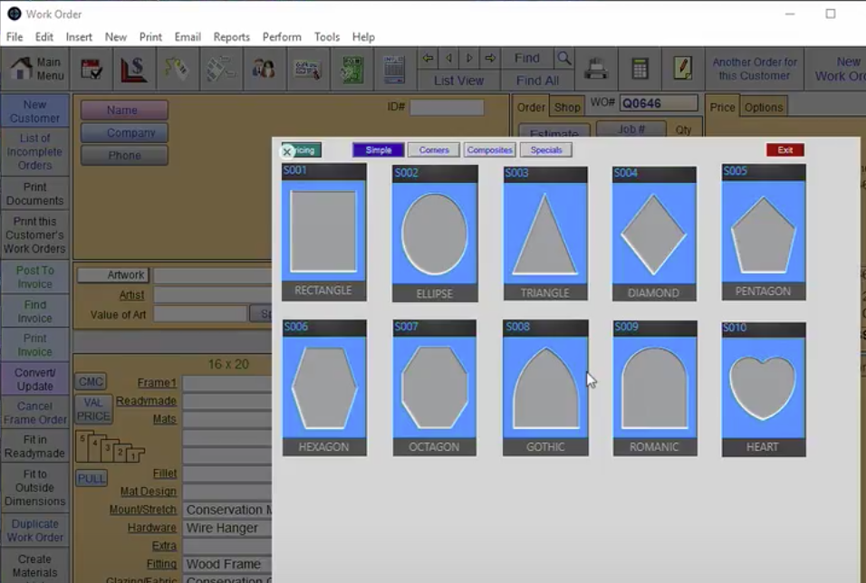
-
The price that you set for the template in the Price Codes (when you set up your prices earlier) is the price used on the Work Order.
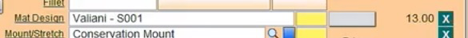
-
After you choose your template, Valiani SmartCut opens above your FrameReady program. Once the program is open, it automatically brings in the information for the opening width and height, the Mat width and height, and the template that was selected.
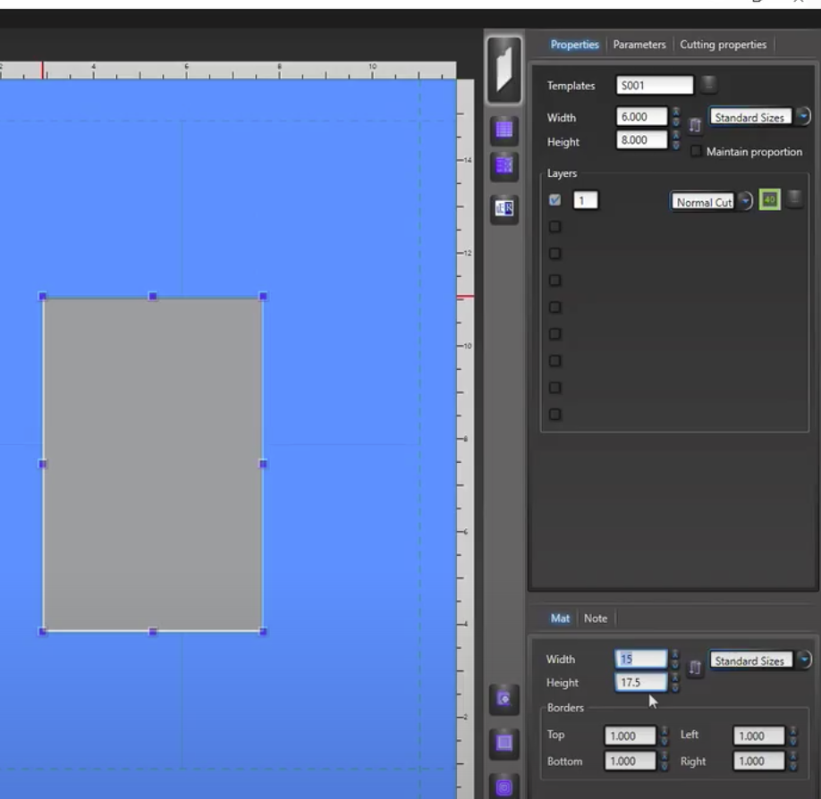
-
Now that your details from FrameReady are in the VStudio Create application, you can move around the opening, change sizes, modify your template and more. Then, you can push all the information from VStudio that you just edited right back into your FrameReady program.
Click the small FR button (to the right of the Mat display) and VStudio closes, revealing the FrameReady window that was behind it.

-
Now that you are back in your FrameReady Work Order, you can click the PULL button (below the other two CMC buttons) and FrameReady will pull the updated information from Valiani’s VStudio Create program. The Work Order will update with the new information and the process can continue from there.

2. Push data from Valiani VStudio into FrameReady
To start your Work Order in Valiani VStudio and then push all of that information into FrameReady, start by creating a new Work Order.
-
In FrameReady, create a new Work Order.
When you have a new blank work order, clear out the default margins so that all the information is blank on the Work Order. -
Click the CMC button to choose which software to work with.
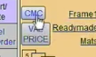
-
Select either VStudio Create or VStudio SmartCut.
-
When the Valiani software opens, it defaults to a square 4 x 4 opening and a default Mat size of 10 x 10. From here, you can begin your project by setting the opening size, the Mat size, the template and more.
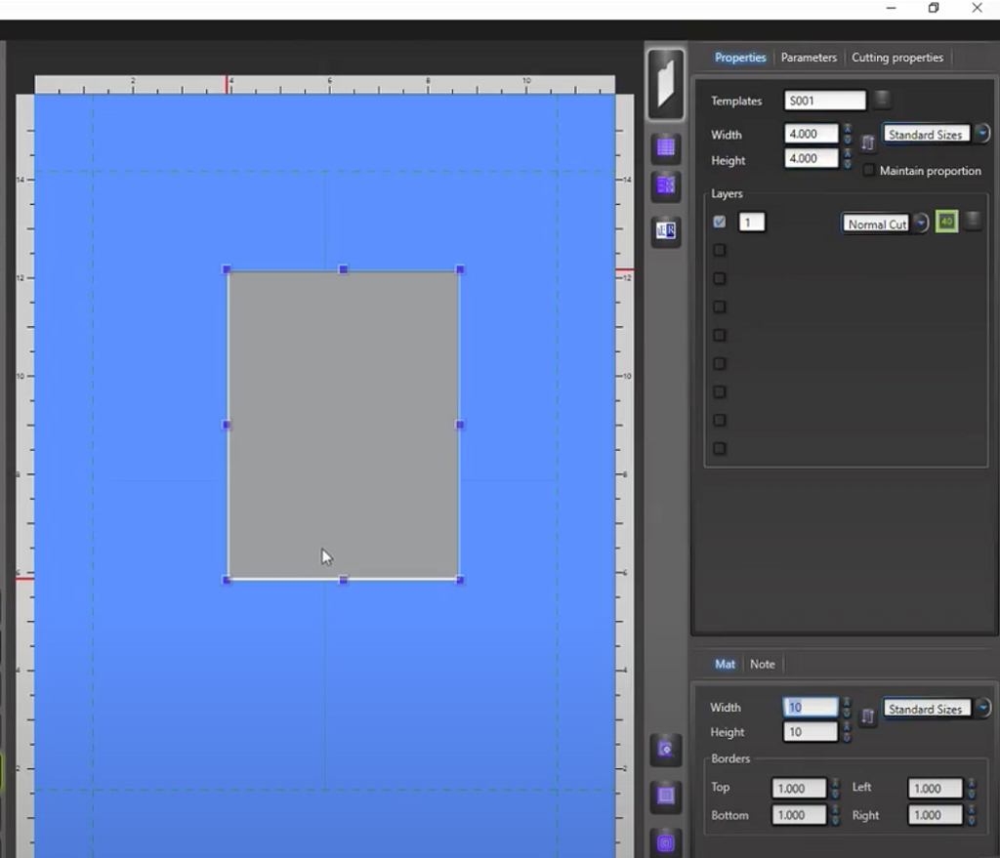
-
To select a template for the mat opening on your Work Order, click the button with three dots (to the right of the Templates field at the top right of the VStudio screen).
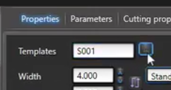
-
A screen appears in VStudio very similar to the screen that pops up in FrameReady when selecting a template for a CMC. On this screen, browse through the template categories at the top and then click on an image of a template to select it for your Work Order.
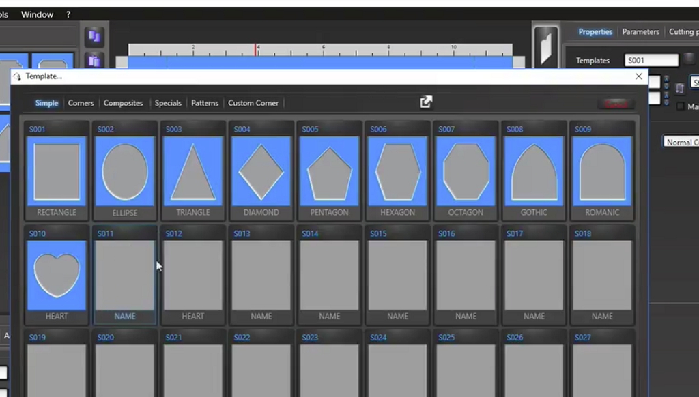
-
Once you are finished entering your information in VStudio and you want to push into FrameReady, click the small FR button (to the right of the Mat screen). This closes the VStudio Create program and reveals the FrameReady window.
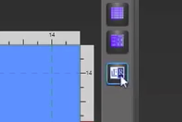
-
Now that you are back in your FrameReady Work Order, click the PULL button (below the other two CMC buttons) and FrameReady updates the information from Valiani’s VStudio Create program. The Work Order updates with the new information and the process can continue from there.
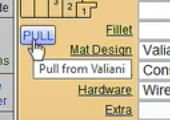
*Make sure that you have cleared the Mat Margins on your Work Order before importing your data into FrameReady from Studio. This will ensure that the Mat total size is imported correctly.
3. Push data from FrameReady into VStudio SmartCut
FrameReady now also allows you to push your data from your FrameReady Work Order directly into the VStudio SmartCut program.
-
FrameReady can also push your data from a FrameReady Work Order directly into VStudio SmartCut. This process is very similar to the Create process.
First, verify that all of your Work Order information is correct and then click the CMC button.
Select a template (if you haven’t already) and then the VStudio software selection window appears. In this new window, click the SmartCut button.

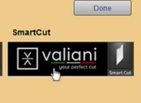
-
VStudio’s SmartCut program opens above FrameReady and loads the information from your Work Order.
You can double-click on the blue thumbnail image (bottom left corner of the SmartCut screen) to see a larger view of the Mat and opening.
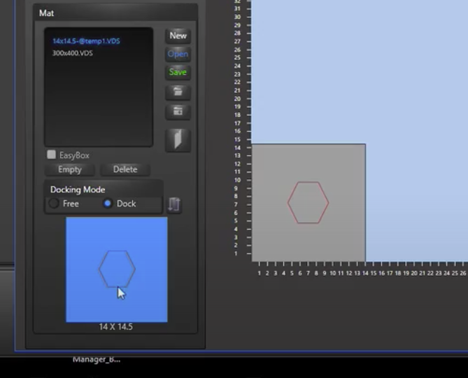
© 2023 Adatasol, Inc.